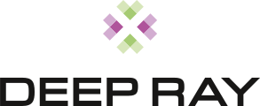

Spin-outs
Spin outs are verticalizations of our technologies in specific domains. They typically stem from internal projects and grow up to become full-blown, self-sustained products and services, each with their own brand.

Artificial intelligence applied towards zero defects production
discoverWorkflow-oriented graphical application for image-based modeling
discover